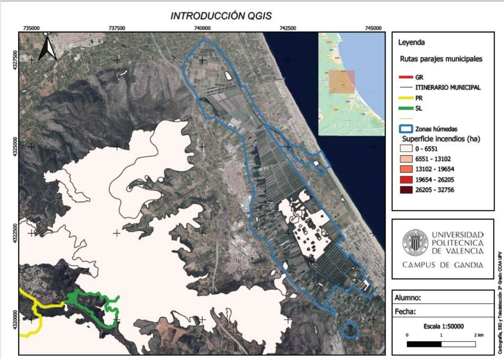

Evidencia
Captura de Pantalla
Visualización del entorno de trabajo inicial.

Recopilación de prácticas y resultados de Tecnologías de la Información Geográfica. Análisis espacial, cartografía digital y visualización de datos.
Explorar PrácticasVisualización del entorno de trabajo inicial.
Total anual de precipitaciones en la península.
Mapa de temperatura media de Junio 2024.
Visualización interactiva de zonas aptas mediante capas vectoriales (.shp).
Modelo digital de severidad de incendios basado en análisis raster (GeoTIFF).
Comparativa de rendimiento y datos obtenidos.
Distribución de contenedores y puntos de accidentes en Madrid.
Cálculo y visualización de índices de vegetación ajustados al suelo.
Visualización del índice final exportado.
Video/GIF de la evolución de los índices.
Estudiante de 3º
Grado en Tecnologías Interactivas
Estudiante de 3º
Grado en Tecnologías Interactivas